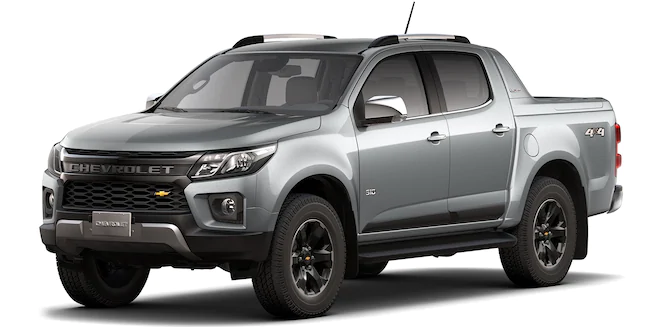

Chevrolet

-
Nova S10 High Country, a picape feita para quem faz
Há 25 anos, a picape feita para
quem faz começou uma trajetória de superação no Brasil. Depois de tantos desafios vencidos no campo,
a experiência só comprova que o que não derruba sempre deixa mais forte. Surpreenda-se com a Nova S10
High Country, ainda melhor em performance, segurança e tecnologia.
-
PERFORMANCE
Não é qualquer picape que carrega toda essa história. O dia a dia no campo tem muitos desafios,
por isso, a Nova S10 High Country chegou com a praticidade da transmissão automática de 6 velocidades e toda a
performance do motor 2.8l Turbo Diesel com 51 mkgf de torque. Com ela, todos os caminhos levam a superação.
-
TECNOLOGIA
Tradição conectada à inovação: a primeira picape com Wi-Fi nativo.
Num mundo onde tudo muda
rapidamente, estar online no campo ou na estrada faz toda a diferença. Por isso, a Nova S10 High Country vem com Wi-Fi
nativo que oferece conexão para até 7 dispositivos, além de MyLink, camera de ré digital de alta resolução e muito mais.
-
SEGURANÇA
Segurança reforçada para você superar todos os desafios.
Na Nova S10 High Country, você e sua
família contam com o melhor da segurança, são 6 airbags (laterais, frontais e de cortina), assistente autônomo de frenagem
e ainda a exclusiva tecnologia OnStar, que oferece proteção 24h por dia, 7 dias por semana.
-
DESIGN
A inovação vem de dentro, mas se reflete no exterior
A Nova S10 High Country está totalmente redesenhada.
Explore seu novo visual com a grade frontal imponente, exclusivas rodas escurecidas de 18” com bordas diamantadas, além do amplo
espaço interno onde tudo está pensado para oferecer uma experiência superior ao volante.